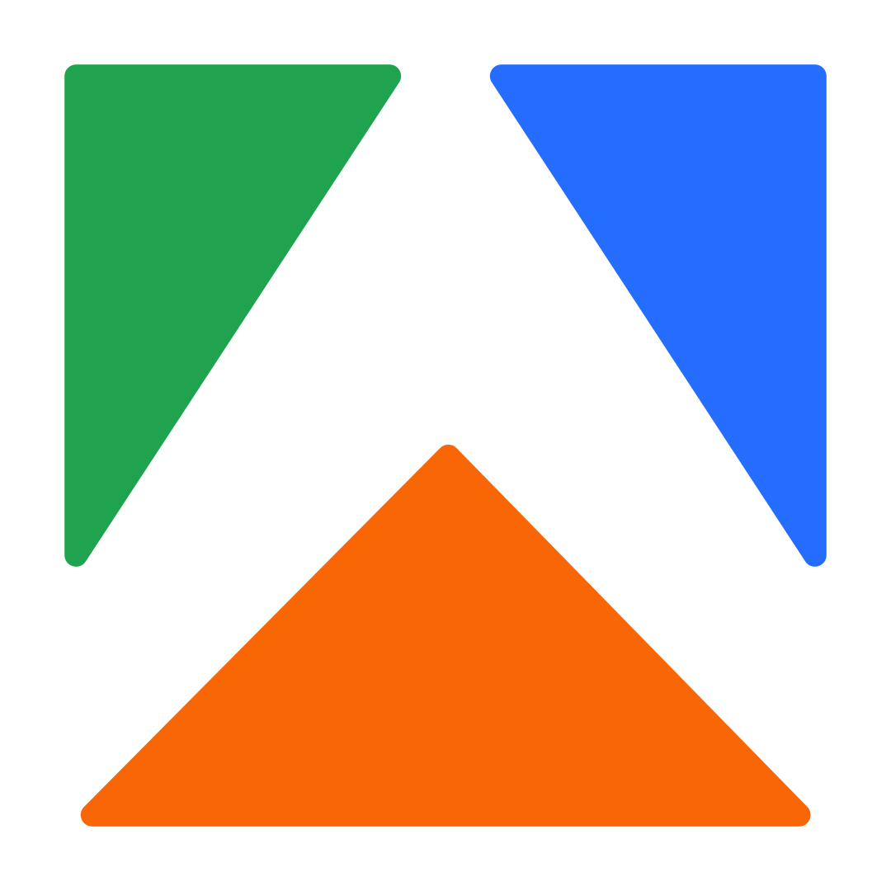

Персональное обучение · Руслан Коновалов · встреча 1
Рабочая
машина
Сегодня собираем вашу рабочую машину: понимаем, из чего она сделана, ставим Codex под капот и даём агенту руки ко всем вашим программам.

Персональное обучение · Руслан Коновалов · встреча 1
Сегодня собираем вашу рабочую машину: понимаем, из чего она сделана, ставим Codex под капот и даём агенту руки ко всем вашим программам.

БЛОК 2 · 11 МИН
Харнесы на рынке

Наш основной. Ставим сегодня

Харнес Anthropic для моделей Claude

Харнес Alibaba для своих моделей

Харнес Google для своих моделей
Редактор кода со встроенным агентом
Автономный, живёт на сервере. Позже
Практика 1 · Вход
01
Приложение ChatGPT для компьютера: chatgpt.com/download
02
Слева вверху переключить с чата на Codex
03
Тем же аккаунтом, где подписка
04
СМС один раз, если попросит

БЛОК 4 · 43 МИН
Как подключаем


Нажали «Установить», вошли в Google. Только в Codex.
Практика 6


Даём ссылку на нашу инструкцию, агент ставит всё сам.
Практики 7 и 9


Один вход, 1 500+ сервисов, одно подключение для всех ваших агентов.
Практика 10
Библиотека коннекторов
Блок 1 · База
Блок 2 · Мессенджеры
Блок 3 · Календарь и задачи
Блок 4 · Суперсилы

Блоки библиотеки 1 и 3 · База и календарь
GmailЧто в почте ждёт моего ответа больше трёх дней? Ничего не отправляй.
GmailВсе счета и акты за октябрь таблицей: от кого, сумма, есть ли оплата.
Google ДискВсе договоры за год: с кем, сумма, срок окончания.
КалендарьГде на этой неделе окна по два часа под спокойную работу?
Блок библиотеки 2 · Мессенджеры
Вход: два кода из самого приложения Telegram. Ключи на my.telegram.org агент получает сам.
Вход по QR: WhatsApp → Настройки → Связанные устройства.
Подключи мне Telegram и WhatsApp по инструкции https://raw.githubusercontent.com/albertvaleev230985/neovida-messengers/main/SETUP.md

Блок библиотеки 4 · Суперсилы
Бесплатная программа с открытым кодом. Зажали клавишу, сказали, текст появился в любом окне.
Русская модель распознавания речи от Сбера: пунктуация, цифры, латиница.
Речь не уходит в интернет: модель лежит на вашем диске. Без подписки.
Блок библиотеки 4 · Суперсилы
1 · ставим первым
Двигатель расшифровки от Сбера: русская речь в текст на вашем компьютере.
2
Скачивает видео по ссылке: YouTube, VK Видео, Rutube и другие.


3
Достаёт звук из любого файла: видео, голосовые, записи созвонов.
4
Режет длинную запись, собирает текст с таймкодами и кладёт рядом.
5
Конспект, задачи, цитаты, посты: всё, что попросите.
Блок библиотеки 4 · Суперсилы
Кнопка в «Плагинах» Codex
Composio

БЛОК 5 · 13 МИН

Встреча 1 закончена
Дальше учим агента вашей работе.